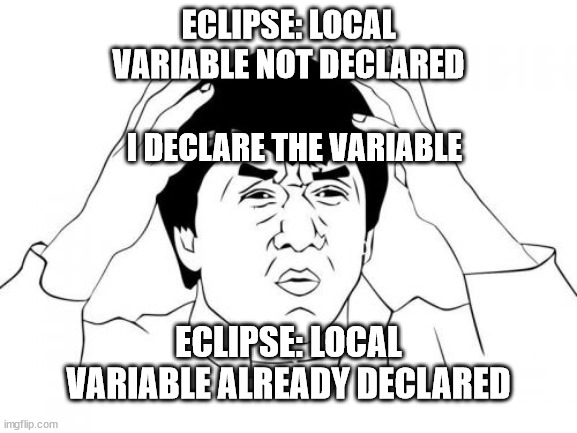

Playing the game: Coding Style
21 Sep 2023
Playing the game: Coding Style
It’s just like basketball
For the lower-division courseware, 111,141,211,241, 212, even 311 to some extent, we’ve been playing a single-player game. It has been a matter of finding out whether each individual student can solve a problem using code. In general, if the code ran, nothing else mattered. If there were extra variables, extra lines, or all the end brackets were crammed together in one line, your code would still pass if it could run. You might have remarks, but you still got a passing grade. After all, if it runs, it runs. To analogize this phase of our education, we learned to dribble and shoot the ball.
Stop Putting all your end Brackets on the Same Line
The purpose of ESLint and implementing coding standards is to completely change the game to a multi-player one. Following the analogy, we need to learn to pass the ball. If we don’t know how to handle the ball or pass it over, then joining a game of basketball isn’t going to be very fruitful for the team we’re on. Once we, as students, enter the game of public repositories, and eliciting help with/for projects in the “real world,” then we have to make sure we can pass the ball and play by the rules. Whether painful or fun, the goal of the green checkmark has been not for our own validation. It is a sign that anyone else on that standard could sit down, look at our code and smartly interpret what we are trying to do. In turn, they can contribute and better our code. They can Steph Curry it from our assist. They can Lebron James/ D-Wade that code into making a great Jamba Juice Menu. It is the equivalent of having learned the words (the general coding), and now, with ESLint, we are learning the sentence structure. This will be a matter of us collaborating and being able to work on projects simultaneously, without me having to explain why I like to put all the end brackets together on the same line.

Is ESLint helpful??
I don’t think the purpose of ESLint is to help learn a new coding language. I think it’s the framework to be able to speak to others through this language. After the first few assignments using ESLint to enforce my coding style, I did notice when items in my code were missing a lot sooner than I would before. Before ESLint, I remember having to click on each individual bracket and parentheses to see where they were matched up to. Whether there were too many or too few. Now, as one example, I can line up where the end brackets and parentheses are indented to and tell immediately where something has gone wrong. Also, in the short amount of time that I’ve used IntelliJ, I can say that the ESLint problems and the recommended solutions are much more useful than those I recall from using say Eclipse IDE. The prompts for “something is wrong” were pretty useless. “local variable not declared.” I declare the variable. “local variable already defined.” What. At least ESLint gives pretty accurate problem descriptors and the corresponding recommended fixes that fall in line pretty well with the rest of the code.
